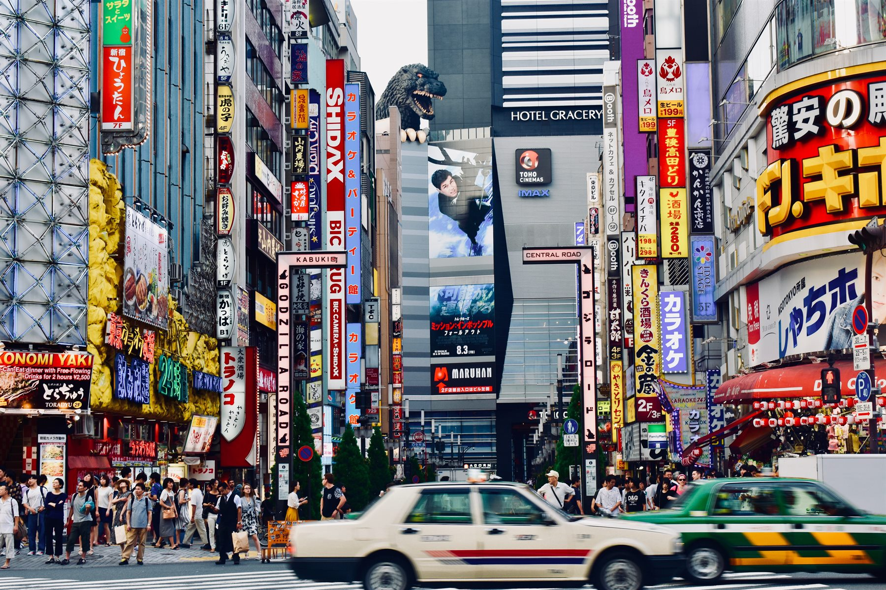
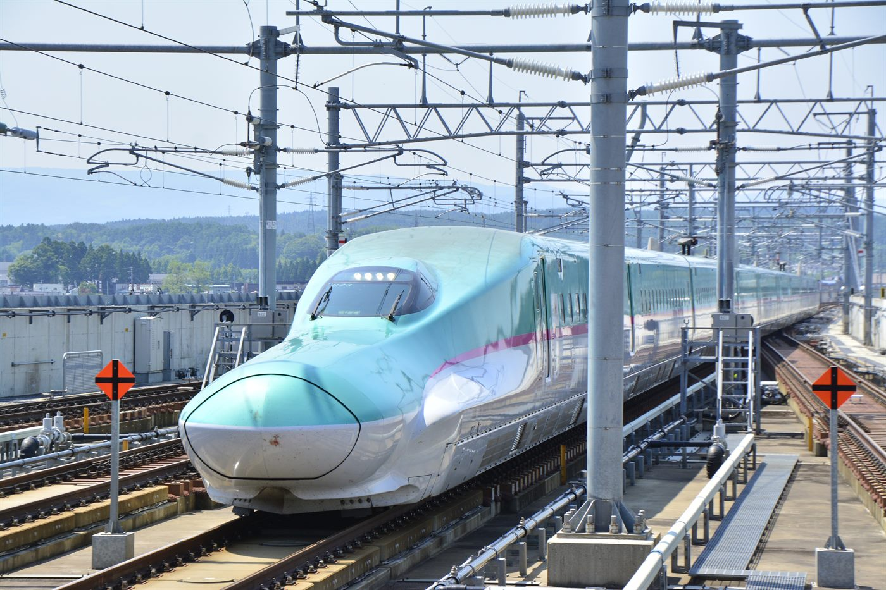
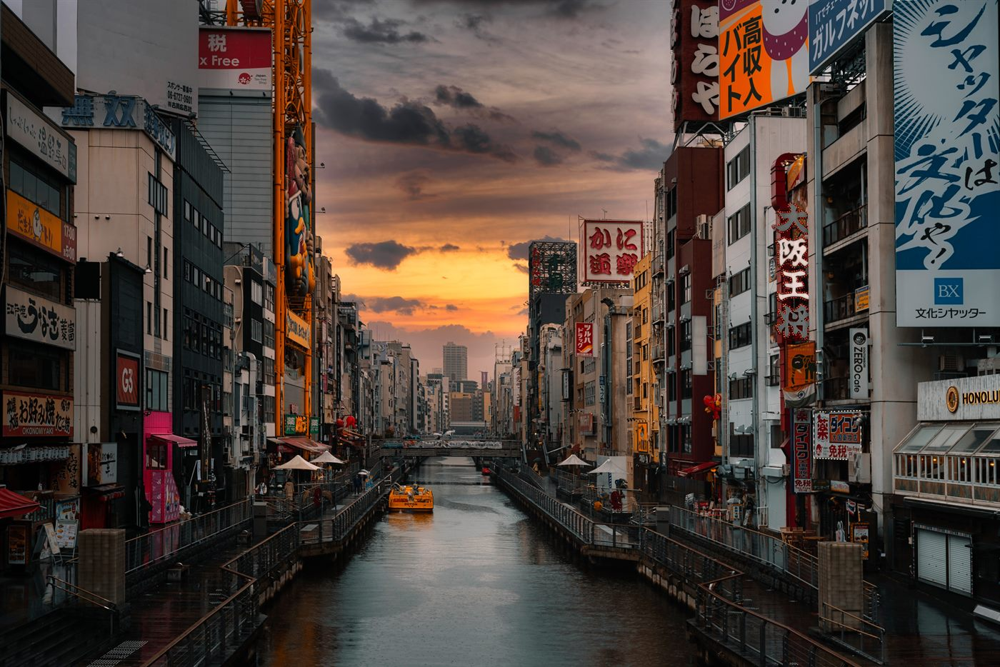

Tokyo Anime Map
Akihabara, Nakano Broadway, Ikebukuro, Animate, Pokémon Center, and Odaiba create a complete Tokyo-based fan route.
Anime · Gaming · Pop Culture
A 10-day route for anime, manga, game, character, and theme-park fans, built around Tokyo pop culture, Ghibli, Nintendo, USJ, and supervised youth-friendly discovery.
10 days · Year-round, best for school breaks · Anime, gaming, and pop culture
Dates, pace, activities, accommodation level, learning goals, and supervision can be adjusted for schools, families, clubs, and private groups.
Overview
This trip puts anime, manga, gaming, and character culture at the center—not as side activities. Tokyo brings the anime districts and digital culture, Nagoya adds Ghibli Park, and Osaka brings in Universal Studios Japan and Super Nintendo World.
It can work as a fan-focused trip, a family vacation shaped around a student’s interests, or a creative-industry discovery program with optional briefings.
Highlights
Akihabara, Nakano Broadway, Ikebukuro, Animate, Pokémon Center, and Odaiba create a complete Tokyo-based fan route.
The Ghibli Museum in Mitaka and Ghibli Park add depth beyond shopping and street exploration.
Universal Studios Japan and Super Nintendo World create a memorable reason to extend the trip beyond Tokyo.
Because this trip is not tied to one short season, it can fit winter, spring, summer, and school-break departures.
Add animation studio visits, IP culture briefings, creative assignments, or media-industry observation.
Timed shopping windows, buddy rules, and clear meeting points make independent exploration feel manageable and supervised.
Day by day
Airport transfer, hotel check-in, and a welcome briefing on pop-culture districts, shopping guidance, and group rules.

Explore anime, manga, capsule toys, model shops, electronics, games, collectibles, and vintage stores.

Visit the Ghibli Museum in Mitaka, then learn about the animation process at the Suginami Animation Museum.
Visit the Animate flagship store, Otome Road, Sunshine City, Pokémon Center, themed cafés, and optional group missions.

See the Unicorn Gundam, DiverCity, Tokyo Bay, teamLab Planets or a similar digital art experience, and evening city views.
Travel to Nagoya and spend the day at Ghibli Park, with focus areas shaped by group interest and ticket availability.

Spend a full day at USJ, with an emphasis on Super Nintendo World and seasonal anime collaboration attractions when available.

Explore Nipponbashi Den Den Town, Shinsaibashi, and Dotonbori, with the return to Tokyo adjusted based on the flight plan.

Choose Mandarake, character stores, themed cafés, cosplay photography, or focused routes for Pokémon, Evangelion, sports anime, and more.

Airport transfer and departure.

Booking and travel terms
These are the general terms. Final pricing, payment dates, and change or cancellation conditions are confirmed in the tailored proposal after the itinerary and services are agreed.
Share your dates, group profile, and priorities. We confirm feasibility, issue a tailored proposal, and begin reservations after written approval and the planning deposit.
A planning deposit confirms the booking. The remaining balance is divided into scheduled payments shown in the proposal, with final payment due before departure.
Cancellation terms follow the tailored proposal and supplier contracts. Fees may increase closer to departure and after tickets, activities, or rooms become non-refundable.
Comprehensive travel insurance is strongly recommended from the time of deposit, including medical care, cancellation, interruption, baggage, and activity-specific cover.
Trip moments


This trip is ideal for teens, fan communities, student clubs, and families who want a Japan experience shaped around real interests.
Request Info